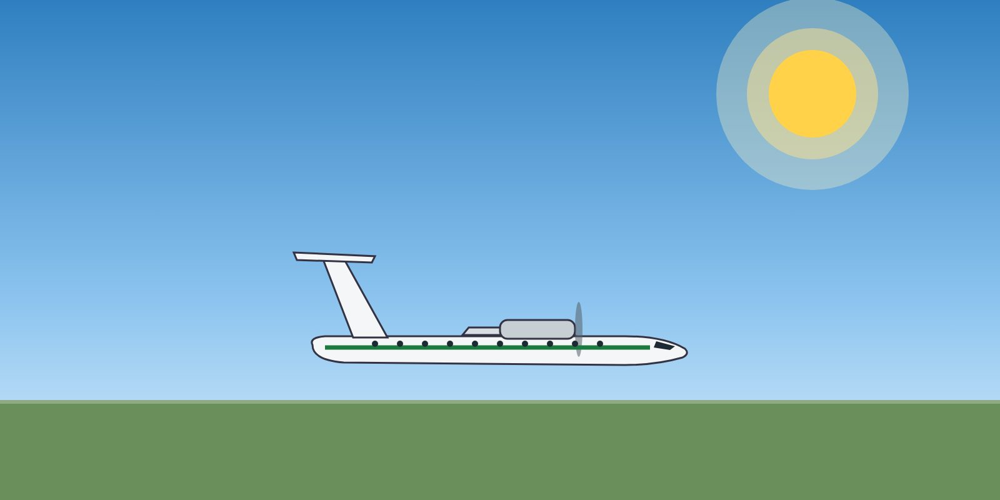
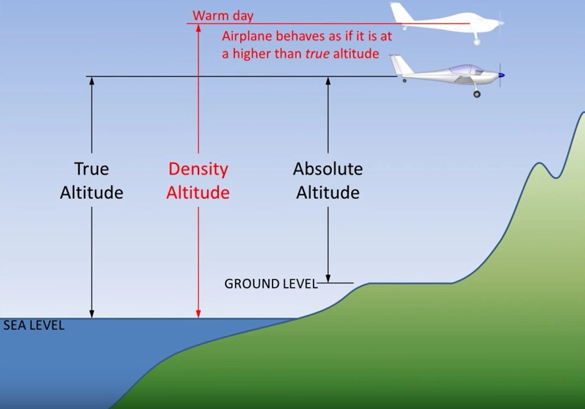
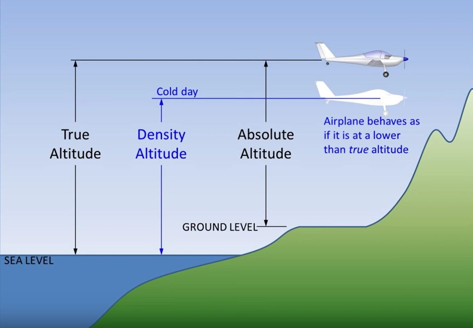
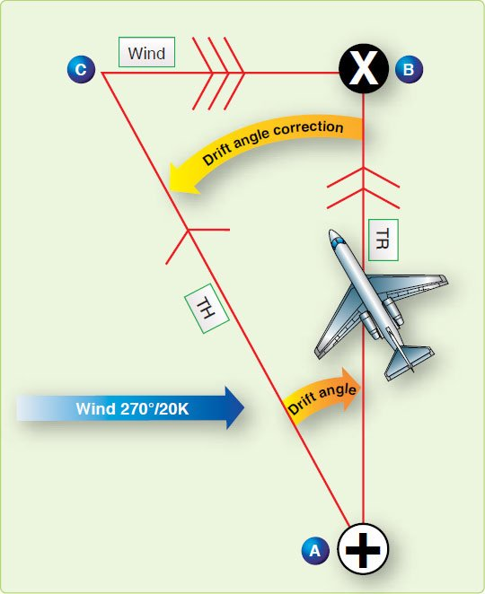

Lesson 01: Environmental Factors and Performance
Learning objectives
- Define pressure altitude and density altitude.
- Explain the effect of temperature, wind, runway condition and slope on performance.
- Define wet and contaminated runways.

Pressure altitude and density altitude
Pressure altitude is the altitude read with 1013 hPa set — the value transmitted by the transponder and used for flight levels. Density altitude is pressure altitude corrected for the temperature deviation from ISA, and it is what the aeroplane "feels": all performance computations depend on it.
- Standard day: density altitude = pressure altitude.
- Warm day: density altitude higher than pressure altitude.
- Cold day: density altitude lower than pressure altitude.


High density altitude = less performance
A high density altitude reduces engine power, propeller thrust and lift: take-off and landing distances increase and the rate of climb decreases. A low density altitude gives the opposite. Temperature has the same effect: high temperature — less performance.

Wind
A headwind gives a shorter take-off distance and a lower ground speed for the same airspeed; a tailwind gives a longer distance and a higher ground speed. In flight, wind changes the ground speed and the drift.


Runway condition
A runway is wet when its surface is reflective with water, but without significant standing water. It is contaminated when more than 25 % of the surface in use is covered by water, slush or loose snow deeper than 3 mm (water equivalent), compacted snow or ice. Contaminants increase the wheel drag (longer acceleration) and degrade braking (longer stop and landing).
Runway slope
A downslope helps the acceleration and shortens the take-off distance but lengthens the stop; an upslope does the opposite.
Key takeaways
- Density altitude decides the performance: hot and high = less performance.
- Headwind shortens, tailwind lengthens the ground distances.
- Contaminated: > 25 % covered, > 3 mm water/slush/loose snow, compacted snow or ice.
- Downslope helps take-off acceleration but hurts stopping.
Knowledge check
On a warm day, density altitude is:
- Equal to pressure altitude
- Higher than pressure altitude
- Lower than pressure altitude
- Zero
Answer: B. Warm air is less dense: the aeroplane performs as if it were higher.